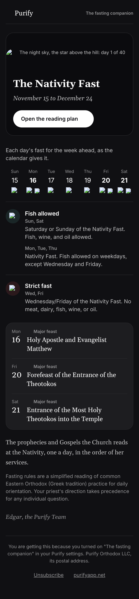

Round 3 · 13 November 2026
Three emails that bring a reader back
The first week, where you left off, and the fasting companion, designed again at your word. One version of each, in the very words the sending will send. Yes or no to each is yours.
What changed
- Each email has a face. It opens on one night card, as the app's own cards stand on Today: the step's picture from the app, the step as the title at its foot, and the one button.
- Type that holds in a mail app. Designed in Georgia and each phone's own sans. No web font is waited on, so nothing falls back to Times.
- The app's own button. A white pill with its arrow, as wide as its words. Unsubscribe is a plain link.
- Nothing said twice. The first week's steps are one short strip. The fast's week stands as the app's own calendar does: the days across with their marks, what each fast allows, and the feasts on the calendar's card.
- The app's default colours, everywhere. Round 3, at your word: Dark in every email, on every screen. No Night sky, no light scheme.
- One button in every email. The fasting companion had two; it keeps one, its reading plan.
- Only true words. Every word is the sending's own letter, which claims nothing the server cannot know: not that you have not prayed, not that you have been away, not which day of a fast you joined on, not which calendar you keep.
The first week
Three emails for a reader who turned the guide on. Morning prayers opens on the icon of the Resurrection, the picture the app sets on morning prayers. The calendar opens on the app's own calendar, a real screen of 1.9. Bookmarking a verse opens on the icon the app sets behind a shared verse. Under each, the three steps as one strip, this email's under a heavier rule. It names no day, because a step already done is never sent.


Pick up where you left off
The reader's own place is the title, with one small line over it. Its picture is the cover of the book they were reading. One button back to it. It does not say how long they have been away, because the server does not know that, and it is still the shortest email Purify sends.

The fasting companion
For the Nativity Fast first. It keeps the night of the app's Nativity card, the star at the reader's own day of the fast, and now the title stands under the hill in the same card. The week stands as the app's own calendar does on a phone: the days across, each with the calendar's mark for its fast and the cross on a feast; then what each fast allows, its mark in a disc of its own colour and each rule in the calendar's own sentence under the days that keep it; then the week's feasts on the calendar's card. One button, the fast's reading plan. It gives no counsel, and closes on the calendar's own word that a priest's direction comes first.



Why it looks this way
One line for each choice: what it is, why, and what it does for the reader and for the goal, which is that a reader comes back.
Each email opens on one night card: the picture, the step as the title, the one button
It is how the app's own cards stand on Today: a night, with the words at its foot. Round 1 was words on black, which any product could send.
For the reader, and for coming backIt is known as Purify before a word is read, and the whole ask fits the first screen of a phone.
The picture is the app's own for the step
Morning prayers wears the icon of the Resurrection in the app. The calendar is a real screen of the 1.9 app. The verse has the icon the app sets behind a shared verse. Romans has its book's cover. The fast has the Nativity card's night. Nothing is drawn or generated for the email.
For the reader, and for coming backWhat is seen in the email is met again in the app, so a second visit feels familiar.
The picture fades into the night at its foot
The Prayers screen does this in the app. A flat banner over a headline is the template every newsletter uses.
For the reader, and for coming backThe title reads as part of the picture, so the eye lands on the step.
Type designed in Georgia, with each system's own sans
A web font does not load in most mail apps, and round 1 fell back to plain Times. Georgia is on Apple Mail and Outlook, and Android's Gmail gets Noto Serif. Nothing waits on a font.
For the reader, and for coming backThe title is a sturdy bold serif on every phone. It never flashes, and never falls back to something dated.
The button is the app's own: a white pill with its arrow, as wide as its words
It is the Pray now card's "Begin". A bar across the page is the generic call to action. Outlook rounds no corner, so there the same pill is drawn as a shape.
For the reader, and for coming backIt looks like the button the reader will press in the app, and it is 48 tall under a thumb.
Every word is the sending's own letter; the look adds none
The sending's letters are held by tests to say nothing the server cannot know: not that a reader has not prayed, has been away, joined a fast on its first day, or keeps the new calendar.
For the reader, and for coming backNothing in the email is untrue of the person reading it, which is what makes the next one worth opening.
One button, and it stands inside the night card
An email that asks for two things gets neither. The button is the letter's own: for the fast, its reading plan.
For the reader, and for coming backOne clear step, on the first screen, every time.
The first week's three steps as one strip, each by its letter's own heading
The list said the title over again. The strip says Morning prayers, The calendar and Bookmark a verse, with this email's under a heavier rule. It names no day, since a step already done is never sent.
For the reader, and for coming backA new reader sees three small things with an end, so the next is expected and not a surprise.
The fast's week stands as the app's calendar does on a phone: the week, what each fast allows, the feasts
Round 2 put all three in one navy card with small marks. The reader already knows the calendar's page; the email is that page for seven days, and nothing in it is drawn for the email.
For the reader, and for coming backIt is read the way the calendar is read, so nothing has to be learned, and it is found again on Wednesday.
The week is one row of the month: the day's name, its date, the fast's mark, and the cross on a feast
It is the app's own month, cut to a week: the same marks in the same place, a feast's date set heavier. No card around it, as the month has none.
For the reader, and for coming backThe whole week is read in one glance: where the strict days fall, and where the feasts are.
What each fast allows: its mark in a disc of its own colour, its name once, each rule under the days that keep it
It is how the calendar's own day says its fast. Round 2 said "Fish allowed" twice, once for each rule; now a fast is named once and each of its rules stands under its own days, in the calendar's own sentence.
For the reader, and for coming back"What may I eat on Wednesday" is answered by finding Wed, and no rule is guessed.
The feasts on the calendar's own card: the day in the margin, the cross with "Major feast", the name in the serif at its plain weight
The calendar lists a day's feasts on a raised card with these words and this cross. The margin is the Sunday email's. Round 2 set every name in bold, which shouted in a list where every row is a feast.
For the reader, and for coming backA feast in a fast is seen at once and read by its name, calmly.
Colour is never the only sign
Each fast has its mark, its name and its sentence, and each feast its cross and its words. With pictures blocked the discs keep their colour and every word still stands.
For the reader, and for coming backNothing is lost to a reader who sees no colour, or no pictures.
The white pill and the calendar's fasting colours are the only colour
Purify's accents are the glowing white and the calendar's registers. Each is used once, for a reason.
For the reader, and for coming backColour means something: white is the thing to press, and teal and red are the fast.
Unsubscribe is a plain underlined link
An outlined pill made it look like a second button.
For the reader, and for coming backIt is honest and easy to find, and it competes with nothing.
The foot is the sending's own sentence: why it came, who sent it and from where. No streaks, no countdowns
These emails are opt-in, and the foot says which setting turned them on. The calendar is the only urgency Purify uses.
For the reader, and for coming backA reader who knows why it came and how to stop it does not feel followed.
Pick up is still the shortest email Purify sends
A picture, the reader's own place as the title, one button. It does not say how long they have been away.
For the reader, and for coming backIt takes five seconds, which is what it has.
No counsel in the fasting companion
How a fast is kept is a priest's to say.
For the reader, and for coming backThe reader trusts it to say only what the calendar says.
The app's default colours, on every screen: no Night sky, no light scheme
His word, on seeing the fasting companion in navy: "keep all the emails default Purify colors". The page is the app's page (#101013), a card the app's card (#1d1d20), the night card the app's well (#0b0b0e).
For the reader, and for coming backIt looks like the app the reader opens every day, whichever phone and whichever mail app it is read in.
Every picture under 64KB and every email under 27KB of HTML
Gmail clips an email past 102KB, and a slow picture is a blank email on a phone.
For the reader, and for coming backIt opens at once.
With pictures blocked, each email still says everything
Many mail apps block pictures until asked. Each picture has its words, and the title, the verse, the week and its key are live text.
For the reader, and for coming backNothing is lost when the pictures are.
What waits on your yes
- The designs, each of the three.
- The words. They are the sending's own letters, shown here exactly as they would be sent. The design adds no sentence of its own.
- The switches. Each email stays off until your yes to its design. Bookmarking a verse is confirmed free for every reader.
The check
Run with node docs/brand/kit/check.mjs on 13 November 2026. It passed: all six emails at 360, 390, 412 and 1032 wide, their pieces on each of the five palettes, in Arabic's direction, and each file a reader gets in Dark's own colours and no others. Each email is 6.5 to 26KB of HTML and no picture is over 64KB. No script, no font fetched, no parchment. No picture, and no file a picture is cut from, is on the heritage list.
These stills are drawn by a browser in Georgia's open twin and in Roboto, the faces a phone's mail app has. Not done here, and still to do before any send: a look in real Gmail, Apple Mail and Outlook, with the phone set light and set dark. In Outlook on Windows the card's corners will be square; the button is drawn there as its own rounded shape. Gmail keeps a dark email dark, so its forced darkening has nothing to turn.